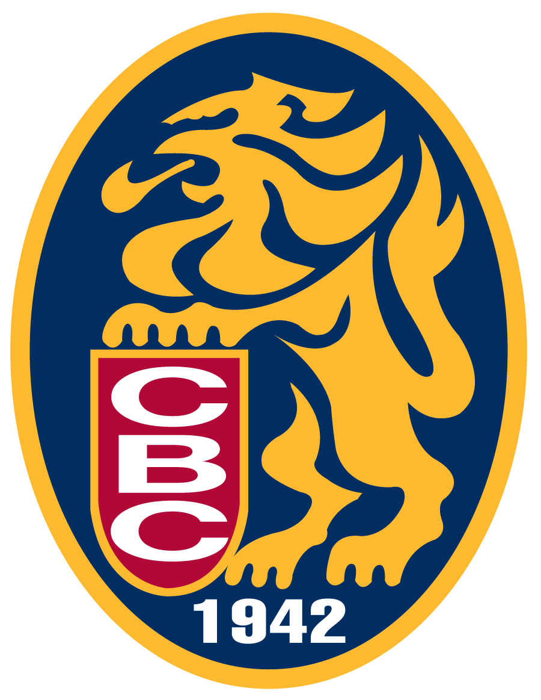
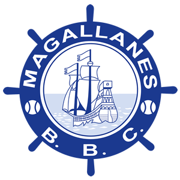
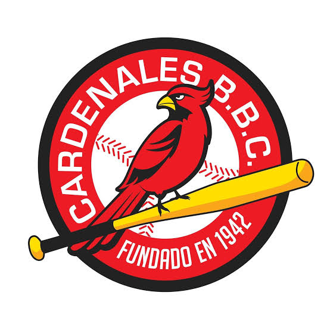
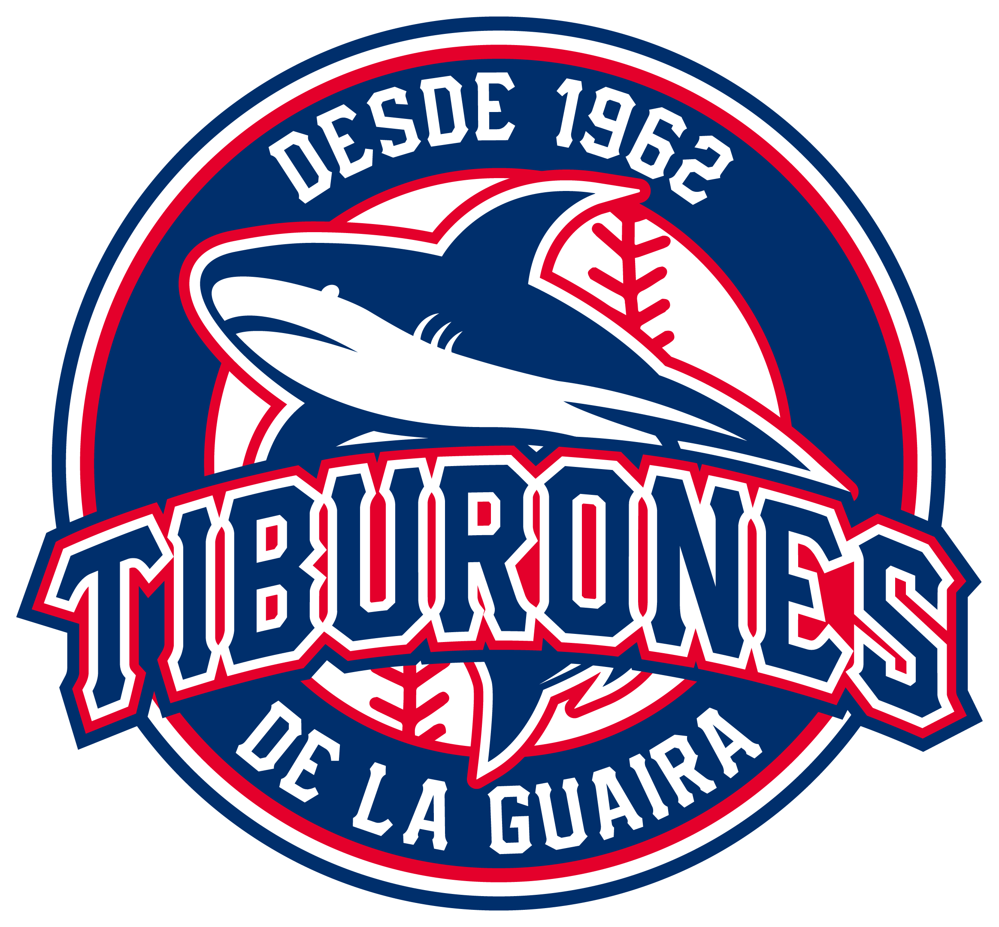
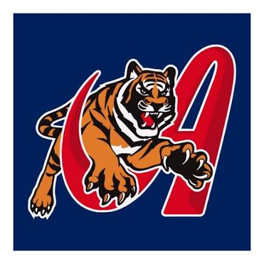
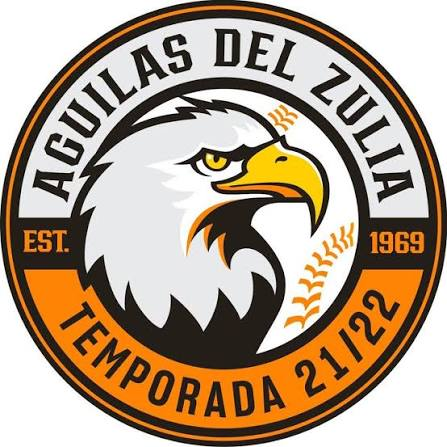

Los 6 grandes protagonistas de las rivalidades históricas de nuestra pelota profesional

Orgullo de la capital con 21 campeonatos nacionales y referente del béisbol caribeño.

La Nave Turca. Equipo de tradición centenaria y protagonista del gran clásico del béisbol venezolano.

El poder crepuscular de Barquisimeto. Mística, gran pitcheo y constancia en postemporadas.

La samba del litoral. Campeones con una de las fanaticadas más alegres del país.

La dinastía aragüeña. Reconocidos por su agresividad en el diamante y títulos consecutivos.

La garra zuliana. Velocidad, juego dinámico e historia consagrada en Maracaibo.